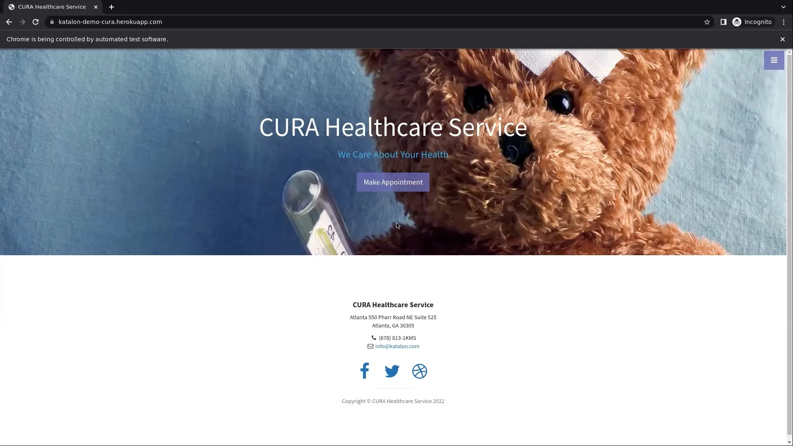
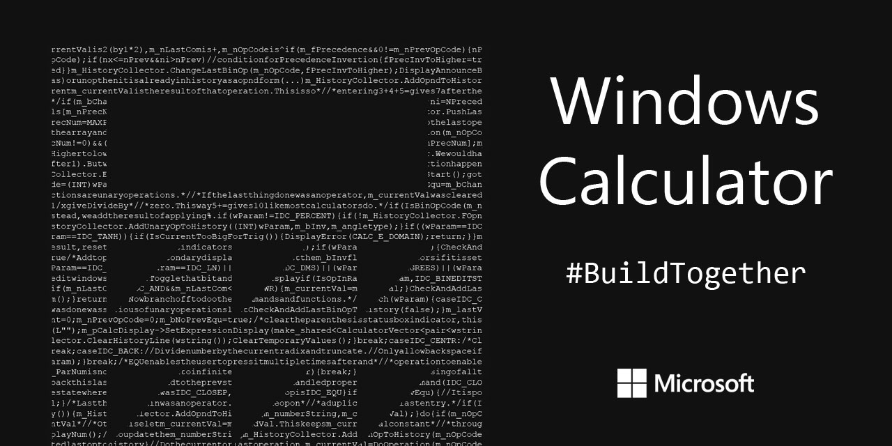

Featured Projects
My Portfolio
This is my high-level portfolio where people can check out my job history and find my social media handles.
HTML/CSS
JavaScript

Automated CURA Healthcare
Written in Java with Selenium. Automates the CURA Healthcare Service website to seamlessly book health checkup appointments and verify logout flows.
Java
Selenium

Automated Desktop Calculator
Demonstrates automated testing of a calculator application using Java, Selenium WebDriver, and Appium, covering basic and mixed arithmetic scenarios.
Appium
JAVA
PDF Email Extractor
A utility project designed to scan PDF files passed as input, extract all valid email addresses, and output them securely into a structured .CSV file format.
Data Extraction with C#

Contact Info Manager
A management script written in C# and Selenium that programmatically performs operations like saving, deleting, and editing contact information.
C#
Selenium